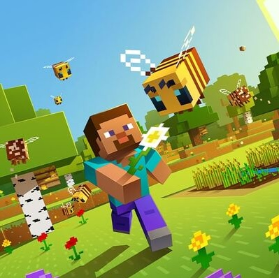
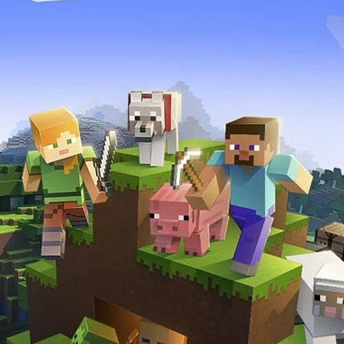

Planning a First Minecraft Shelter
October 7, 2026 by Bobby King

A first shelter does not need to be large to be useful.
A compact room gives you a place to organise supplies and plan
the next build. Before adding decoration, decide where the
entrance, storage and main walking space will go. Leaving a
clear route through the room makes even a simple design feel
deliberate, and it is easier to extend a planned layout later.
For the outside, choose a small set of materials and repeat them
consistently. A contrasting roof or doorway can make the main
shape easier to read without covering every wall in detail.
The aim is to create a recognisable structure with room to grow.
Once the basic shape works, windows, paths and lighting can give
the shelter its own character while keeping the entrance clear.
Designing an Organised Minecraft Farm
October 7, 2026 by Jack Sparrow

A farm is easier to navigate when its growing areas and paths
have a clear pattern. Begin by deciding how you will enter the
space and where you will keep supplies. Repeated rows create
a sense of order, while paths separate the crops into sections
that are easy to recognise. A small, organised layout also makes
it easier to notice which parts need attention as the farm grows.
The surrounding details should support that layout. Fences,
signs and a simple storage area can make the farm feel connected
to the rest of the build. Try repeating materials from the
shelter so the two areas look related. Before adding more fields,
check that you can move through the existing space comfortably.
Expanding a clear pattern is usually easier than repairing a
crowded layout after every new section has been added.